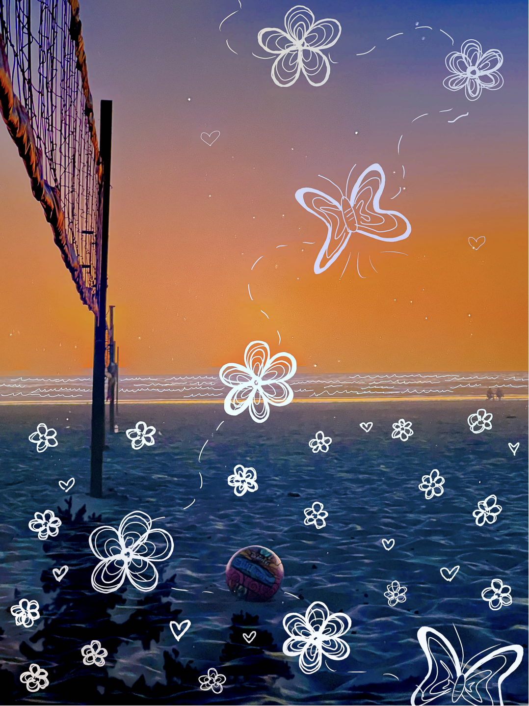
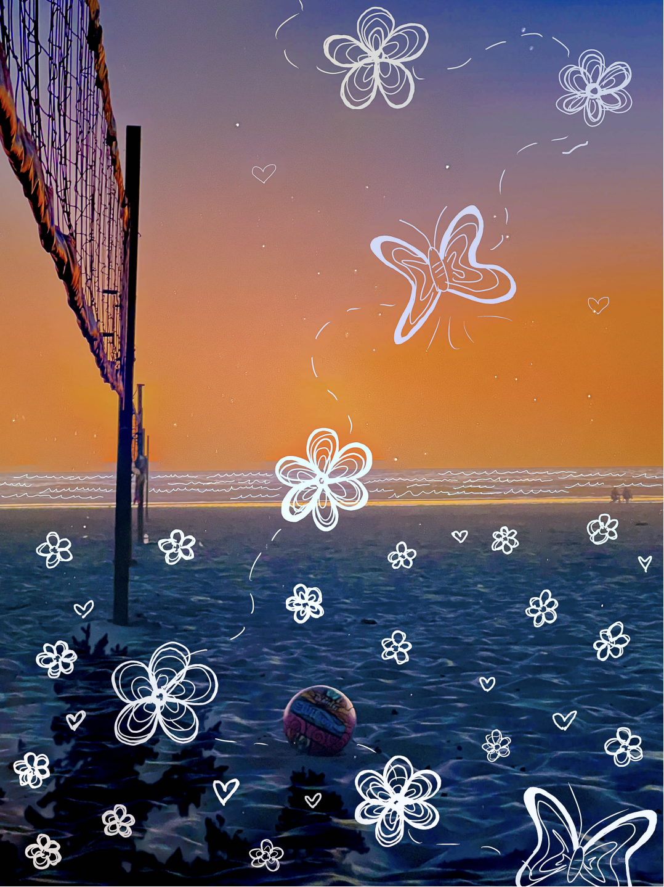

My Projects
Data Projects
-
2020 U.S. Election Data Journey:
In the Fall of 2024 I collaborated on a group project in my Information Ecosystems course taught by Dr. Leisya Palen. Through gathering a wide range of data from various sources related to the 2020 U.S. election, including voter turnout, demographics, absentee/ mail-in voting, and more. By analyzing and combining these data points, we created a comprehensive information flow that mapped how each data element contributed to the larger picture of the election process.
-
The Information Work of the CU Ambassadors:
In the Fall of 2024, my classmates and I conducted an in-depth ethnographic study of the CU Student Ambassadors, the group that organizes all student tours on campus. We used a combination of interviews, observations, and other sources to build comprehensive social world models of the organization. With these models and observations, we were able to break down the organization's information workflow, and from there, we created a detailed data journey map that illustrated how all the information flows and how data travels within the organization.

 (1).png)
 
